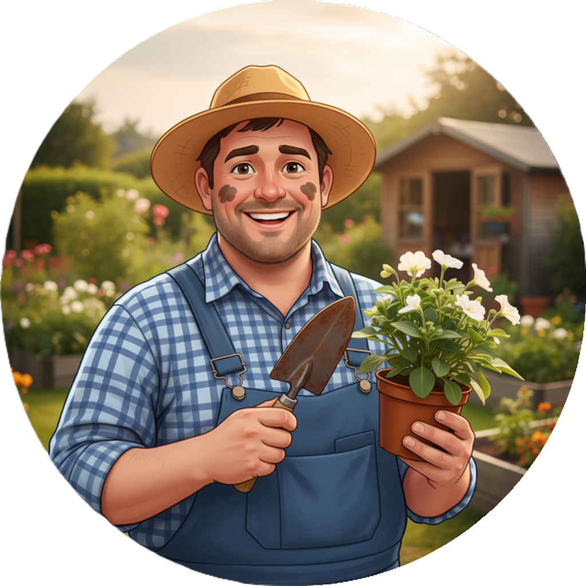

Nuestra Historia e Inspiración

Fundador: Chicho Sambrano
Ingeniero Agrónomo y Paisajista con más de 15 años de experiencia, ha dedicado su vida a transformar espacios urbanos en refugios naturales, combinando sostenibilidad con estética moderna. Su pasión es el motor de cada diseño.
Misión
Ser la chispa verde que transforma Panamá, creando ecosistemas funcionales y estéticos que inspiren bienestar, respetando la biodiversidad y superando las expectativas de cada cliente con excelencia y creatividad.
Visión
Convertirnos en el referente indiscutible del paisajismo en Centroamérica, reconocidos por nuestra innovación en el diseño sostenible, el uso de tecnología de vanguardia y la pasión por devolver la naturaleza a la vida diaria.